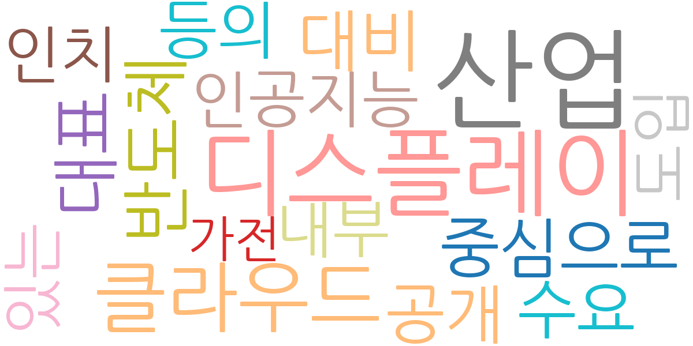
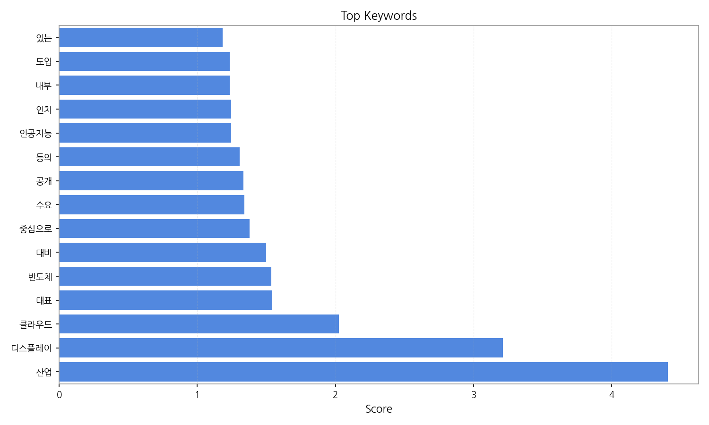
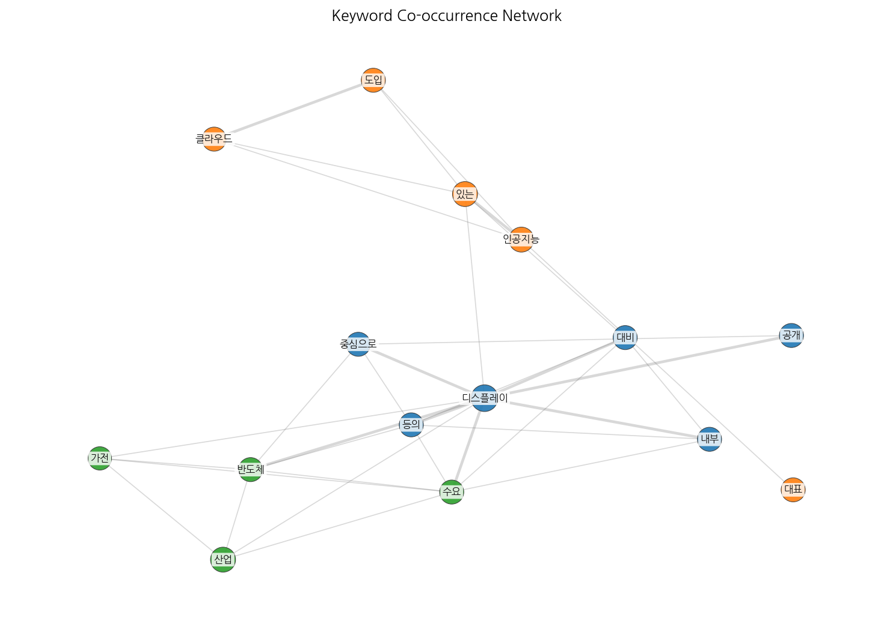
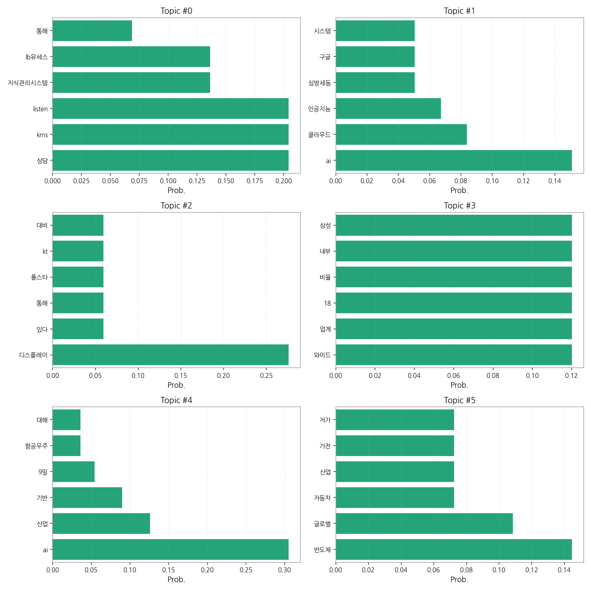
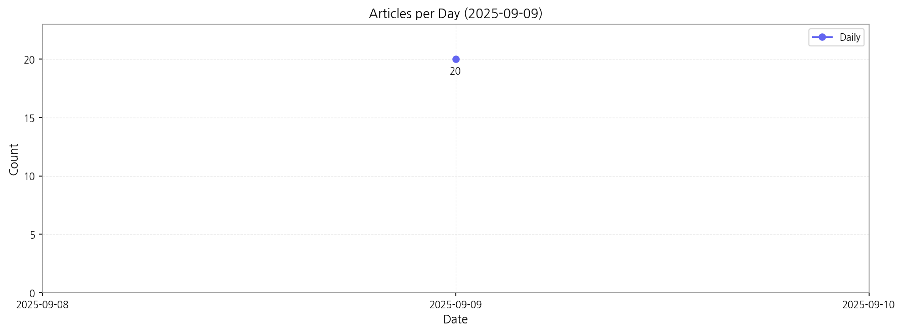

이번 기간 핵심 토픽과 키워드, 주요 시사점을 요약합니다.
핵심 맥락: 제공된 데이터는 크게 세 가지 주요 맥락을 보여줍니다. 첫째, AI 기반 기술 도입과 관련된 기사들이 다수를 차지하며, 특히 AI를 활용한 산업 자동화 및 클라우드 시스템 구축에 대한 내용이 주를 이룹니다. 둘째, 디스플레이 기술 및 관련 산업 동향에 대한 보도가 상당하며, 특정 기업(삼성, 폴스타 등)의 기술 개발 및 시장 경쟁에 대한 뉴스가 포함됩니다. 셋째, 지식 관리 시스템(KMS) 도입 및 상담 시스템 개선과 관련된 기사들이 존재하며, 기업의 내부 효율성 향상 및 고객 서비스 개선 노력을 반영합니다. 이러한 세 가지 맥락은 한국의 기술 산업 발전과 경쟁력 강화를 위한 노력을 보여주는 동시에, 기업들의 디지털 전환과 고객 중심 경영 전략을 반영하고 있습니다.
최근 변화/스파이크: 2025년 9월 9일 20건의 기사가 집중적으로 발생한 것을 볼 때, 특정 시점에 관련 뉴스가 급증한 것으로 추정됩니다. 이는 특정 기술 발표, 정부 정책 발표, 또는 주요 기업의 사업 전략 변화 등 외부 요인에 의해 발생했을 가능성이 높습니다.
실무 인사이트:
AI 기술 도입 전략 수립: AI 기반 시스템 도입을 위한 구체적인 로드맵을 수립하고, 클라우드 기반 인프라 구축 및 데이터 관리 전략을 포함해야 합니다. 특히, AI 도입으로 인한 업무 프로세스 변화와 직원 교육 계획을 세우는 것이 중요합니다.

| Rank | Keyword | Score |
|---|---|---|
| 1 | 산업 | 4.406 |
| 2 | 디스플레이 | 3.213 |
| 3 | 클라우드 | 2.025 |
| 4 | 대표 | 1.544 |
| 5 | 반도체 | 1.535 |
| 6 | 대비 | 1.499 |
| 7 | 중심으로 | 1.377 |
| 8 | 수요 | 1.342 |
| 9 | 공개 | 1.334 |
| 10 | 등의 | 1.306 |
| 11 | 인공지능 | 1.244 |
| 12 | 인치 | 1.244 |
| 13 | 내부 | 1.236 |
| 14 | 도입 | 1.234 |
| 15 | 있는 | 1.182 |




핵심 맥락: 제공된 데이터는 크게 세 가지 주요 맥락을 보여줍니다. 첫째, AI 기반 기술 도입과 관련된 기사들이 다수를 차지하며, 특히 AI를 활용한 산업 자동화 및 클라우드 시스템 구축에 대한 내용이 주를 이룹니다. 둘째, 디스플레이 기술 및 관련 산업 동향에 대한 보도가 상당하며, 특정 기업(삼성, 폴스타 등)의 기술 개발 및 시장 경쟁에 대한 뉴스가 포함됩니다. 셋째, 지식 관리 시스템(KMS) 도입 및 상담 시스템 개선과 관련된 기사들이 존재하며, 기업의 내부 효율성 향상 및 고객 서비스 개선 노력을 반영합니다. 이러한 세 가지 맥락은 한국의 기술 산업 발전과 경쟁력 강화를 위한 노력을 보여주는 동시에, 기업들의 디지털 전환과 고객 중심 경영 전략을 반영하고 있습니다.
최근 변화/스파이크: 2025년 9월 9일 20건의 기사가 집중적으로 발생한 것을 볼 때, 특정 시점에 관련 뉴스가 급증한 것으로 추정됩니다. 이는 특정 기술 발표, 정부 정책 발표, 또는 주요 기업의 사업 전략 변화 등 외부 요인에 의해 발생했을 가능성이 높습니다.
실무 인사이트:
AI 기술 도입 전략 수립: AI 기반 시스템 도입을 위한 구체적인 로드맵을 수립하고, 클라우드 기반 인프라 구축 및 데이터 관리 전략을 포함해야 합니다. 특히, AI 도입으로 인한 업무 프로세스 변화와 직원 교육 계획을 세우는 것이 중요합니다.
| Idea | Target | Value Prop | Score |
|---|---|---|---|
| AI 기반 디스플레이 생산 최적화 플랫폼 | 삼성디스플레이, LG디스플레이와 같은 대기업 디스플레이 제조사 및 중견기업 | AI 기반 머신러닝 알고리즘을 통해 실시간 생산 데이터 분석 및 예측을 제공하여 불량률 감소, 생산 효율 증대, 원가 절감을 실현합니다. 경쟁사 대비 차별화된 예측 정확도와 실시간 대응 시스템을 제공합니다. | 4.50 |
| AI 기반 지식 관리 시스템(KMS) 고도화 서비스 | 500명 이상의 직원을 보유한 중대형 기업, 특히 고객 상담 및 기술 지원 부서가 있는 기업 | AI 기반 자연어 처리 기술을 활용하여 지식 검색 및 추천 기능을 고도화하고, 개인 맞춤형 지식 제공 및 지식 공유 플랫폼을 구축하여 업무 효율성을 극대화합니다. 경쟁사 대비 정확하고 빠른 정보 검색 및 개인화된 지식 제공을 통해 차별화를 제공합니다. | 4.20 |
| 클라우드 기반 AI 산업 자동화 솔루션 | 제조업, 물류업 등 자동화가 필요한 중소 및 중견기업 | 클라우드 기반으로 초기 투자 비용을 절감하고, 모듈화된 AI 기반 자동화 솔루션을 제공하여 다양한 산업 현장에 적용 가능합니다. 경쟁사 대비 유연하고 확장성 있는 솔루션을 제공하여 고객 맞춤형 서비스를 제공합니다. | 4.00 |
| 디스플레이 기술 트렌드 분석 및 예측 서비스 | 디스플레이 관련 기업, 투자사, 연구기관 | AI 기반 데이터 분석 및 예측 기술을 활용하여 디스플레이 기술 트렌드를 분석하고 미래 시장을 예측하는 서비스를 제공합니다. 경쟁사 대비 정확하고 신속한 정보 제공을 통해 의사결정 지원 및 경쟁력 강화에 기여합니다. | 3.80 |
| AI 기반 고객 상담 시스템 개선 솔루션 | 고객 상담 부서가 있는 중소 및 중견기업 | AI 기반 챗봇 및 상담 분석 시스템을 통해 상담 대기 시간 단축, 상담원 업무 효율 증대, 고객 만족도 향상을 제공합니다. 경쟁사 대비 정확한 고객 니즈 파악 및 개인화된 상담 서비스 제공을 통해 차별화를 제공합니다. | 3.50 |